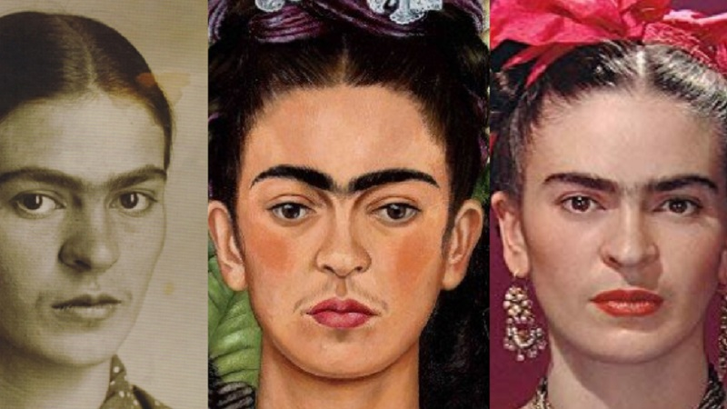

Um pouco sobre a história de Frida...

Frida Kahlo foi umas das mais importantes pintoras mexicanas do século XX, e destacou-se por ser uma artista singular. Com uma produção bastante autobiográfica, Frida retratava temas e angústias pessoais. Entretanto, sua obra acabou comunicando-se e inspirando diversas mulheres, de forma que a artista se tornou um símbolo para o movimento feminista.
"Se eu pudesse lhe dar alguma coisa na vida, eu lhe daria a capacidade de ver a si mesmo através dos meus olhos. Só então você perceberia como é especial para mim.
- Frida Kahlo
Sua história
Magdalena Carmen Frida Kahlo y Calderon, conhecida popularmente como Frida Kahlo, foi uma das figuras mais importantes para a arte do século XX. Além disso, ela também representou um dos personagens mais significativos nos âmbitos políticos e culturais do México. Frida Kahlo foi uma grande artista do século XX. Suas obras, conhecidas internacionalmente, contam com representações pessoais.
A vida da artista era repleta de lutas, desde a saúde, até o casamento.As obras de Kahlo refletem sua realidade, uma história de guerras internas, lutas, entre outros grandes traumas. A artista viveu um casamento conturbado, sua saúde era muito frágil e ela não podia ter filhos. Suas aflições também ficaram registradas em um diário. Frida Kahlo morreu no dia 13 de julho de 1954. Em seu diário, suas últimas palavras registradas foram: “Espero a partida com alegria… e espero nunca mais voltar”.
Autora: Beatriz Liu Front End I Desenvolvedora Link para Github